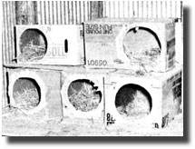

It was the same old story. USDA pamphlets recommended one nest for every five layin' hens. I had a dozen of the "girls", and the only commercially available nests were huge metal banks of ten compartments apiece. I wouldn't have needed that many even if I could have afforded them.
So I decided to do-it-myself. After all, I figured a chicken nest couldn't be too awfully difficult to put together. My survey of the readily available materials soon convinced me that cardboard boxes-free from my friendly neighborhood supermarket-would be "just what the doctor ordered".
Of course, I tried a number of experiments before I got my nest designs "just right". In fact, one of the lessons I learned during this trial-and-error period is that chickens don't necessarily agree upon one standard size and shape of container to lay their eggs in . . . each breed has its own preferences.
The closest thing I've found to a "universally acceptable" box size happens to be the one that supermarkets generally receive their egg deliveries in, In the case of these "nests", at least, I know the answer to the old riddle about "which came first".
Regardless of what size crates you choose (that is, which ones your chickens pick for you), the cardboard nests are a snap to construct.
First, cut a nine-inch circular doorway about two inches from the end of one of the "long sides" of the box. I find that a round hole is less likely to tear out than a square opening would be.
Then, since hens will peck at any loose edges that they find until the box is a wreck . . . you'll have to cover the cut border of the hole inside and out. A simple way to do this is to "buttonhole" the opening with small pieces of masking tape. Stick 'em to the inner wall of the crate first, pull 'em over the lip of the hole, and then attach 'em to the outer surface. It takes a little longer if you overlap each sticky strip with the next one, but the result will hold up well enough to be worth your trouble. All of those little "radius" tapes, of course, will leave a regular sunflower of ends around the opening. I cover the "petal tips" of this "flower" with longer strips of adhesive, which creates a sort of lumpy circle around the hole itself. This process can be seen pretty clearly in the accompanying photo.
Once the hole's diameter is well covered, all of the flaps on the interior and exterior of the container should be glued or taped in place. The idea, of course, is to smooth all the box's surfaces so much that there'll be no "peckin' edges" left anywhere on the container.
Hens like a "step" in front of their nests, so I try to stack my cartons so that they present a staircase of however many levels I need. Most chickens seem perfectly satisfied with a two-layer structure . . . if the bottom nests are set on something that keeps them six inches or so off the ground.
My Leghorns, however, like their beds higher. In fact, when I tried to get them to accept the usual low nests, they responded by eating any eggs they found in them. As a result, the Leghorns now have a separate "apartment" on a shelf above the rest of the hens' "rooms".
I bed my boxes with barley straw-just because it's the only thing I have at hand-but it does wear out quickly, and has to be changed regularly.
Nest maintenance couldn't be easier, though. I've never had a set (even under a leaky roof) last less than a year. At that point they should be sterilized Oust burn 'em up and build new ones) anyway.
All in all, I've found my "egg boxes" to be very worthwhile. They're cheap, the hens like them, and they provide me with a flexibility that the store-bought metal products just can't match. For instance, I had one old biddy that would not lay her eggs anywhere but on top of the boxes, only to have the potential omelets fall to the floor and break. It took me three tries to modify a cardboard box into an enclosure that she'd use . . . and the solution turned out to be a "tunnel", with holes on both sides.
She and I would have been flat out of luck if our only choice had been a wall full of galvanized commercial nests, wouldn't we?
|
 |
|
|